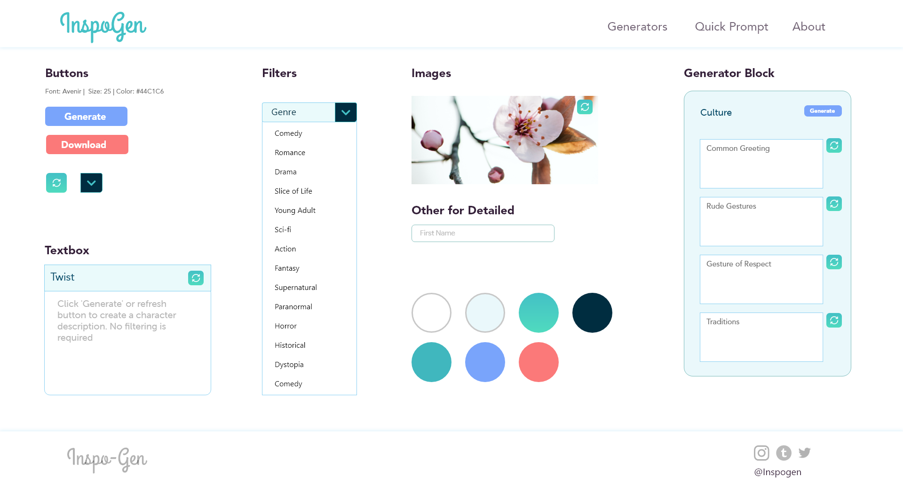

How may we relief a writer's or artist's block without obstructing their creative process in an efficient way?
Tools
- ADOBE XD
- HTML/CSS
- JavaScript
- InDesign, Illustrator
Skills
- UX/UI
- Research
- Information Architecture
- Interviewing
Inspired by my passion for creative writing, digital art, a need for a generator that doesn't exists and my first JavaScript project
Problem Statement
Writers and artists need quick inspiration or decision to continue their work, rather than losing valuable time. Current generator/inspiration websites either have only words, or pictures. Navigation is confusing, too dated or missing aspects that is normally. In addition, they tend to have too much or too little information.
Project Goal
Inspiration Generator’s goal is to cater to three different users (hobbyists, teachers, professionals) who are story creators. The website will allow a level of personalization so that the user may receive the best options. The website is consistent of user friendly navigation, providing the user to choose the level of customization, inspiring and quality imagery .
Competitors
Masterpiece-generator.uk
Seventhsanctum.com
- • Dated Design
- • Not consistent
- • Navigation is confusing (no form to go back, or wording is unclear of the contents of the page)
- • Too complex answers or no filtering system
- • Information Anxiety
Research: Card Sorting
Online & Paper
Sorting variables into different categories
Result
• The word 'settings' is thought to be located in Genre
• Location would include time.
• In other cases, an option meant random, twists etc
• It’s expected that plots would normally be include genres.
• Location would have a word description.
Style Guide
Features
Design
• Avenir, modern, sans-serif font
• Showing hierarchy by placement
of importance and scale
• Flat design
Color Scheme
Calm, inspiring, minimal
• Pastel color pallete.
• Teal represents creativity, openiness
• Colourful to resemble creativity but not overwhelming
Learn more about me here!
Contact me at: zani@sheridancollege.ca
Website coded with ♥️